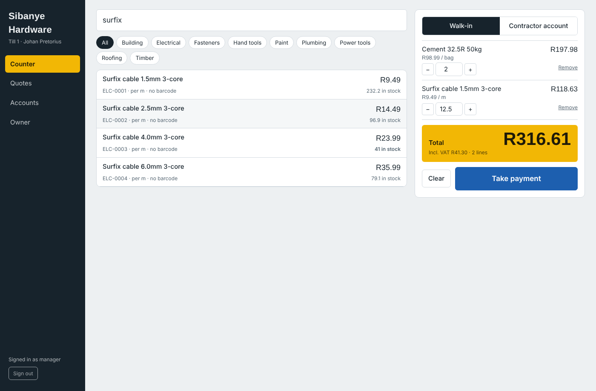
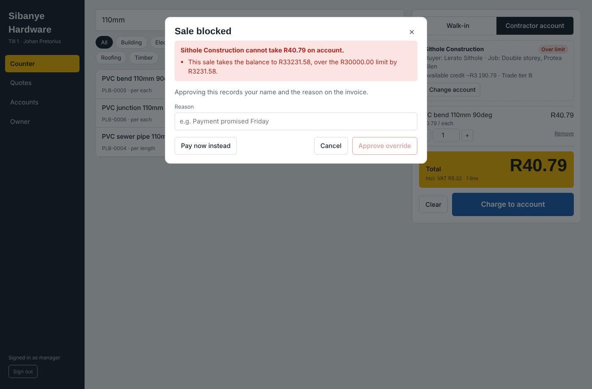
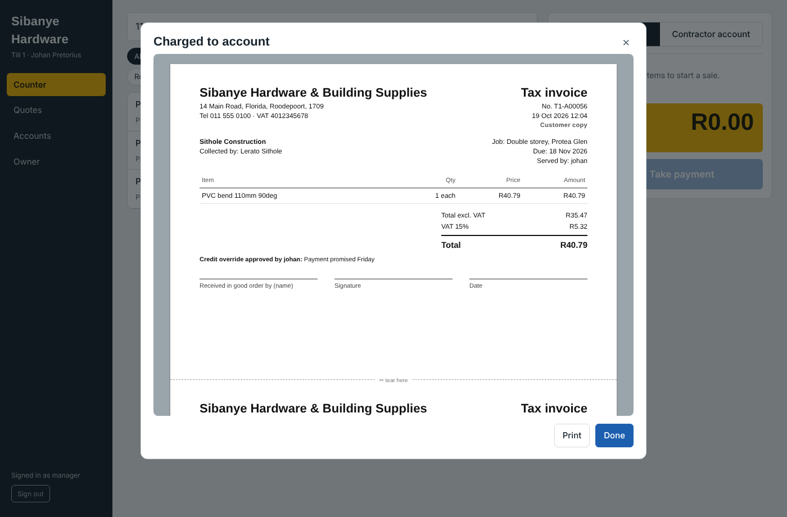
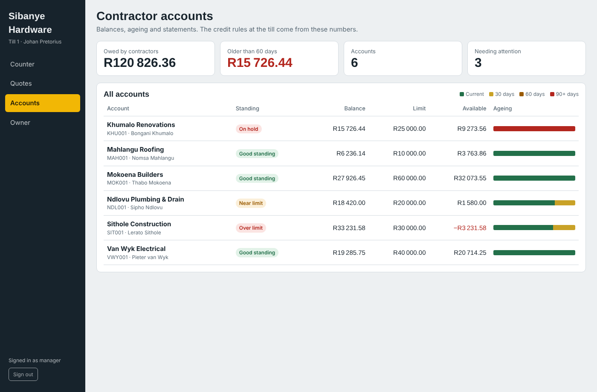

Most point-of-sale software handles cash over the counter well, and the credit a small hardware store extends to its builders barely at all. That second half is usually a paper book behind the counter. This is both halves, built properly.
The prototype runs entirely in your browser with sample data: sell something, charge it
to Sithole Construction and watch the credit check stop you. The full system — Spring
Boot API, PostgreSQL, Angular till — runs from the repository with one
docker compose up.
Loose screws, sand, bricks, cable by the metre, sand by the cubic metre. Found by name and category, sold in fractions.
Credit limits, trade price tiers, job sites, and authorised buyers who each confirm with a PIN and carry their own per-sale ceiling.
Account on hold, debt past 90 days, over the limit, over the buyer's limit — checked together, with a manager override recorded on the invoice.
Payments allocated oldest invoice first; ageing derived from those allocations, so the buckets always add up to the balance.
“10 pockets cement, 6 x 110 pipe, 3 boxes 4x40 screws” becomes a priced quote, with anything uncertain flagged for a person to check.
Power cuts and dropped lines are routine. Sales queue on the till with their own identifiers and sync without ever charging twice.



